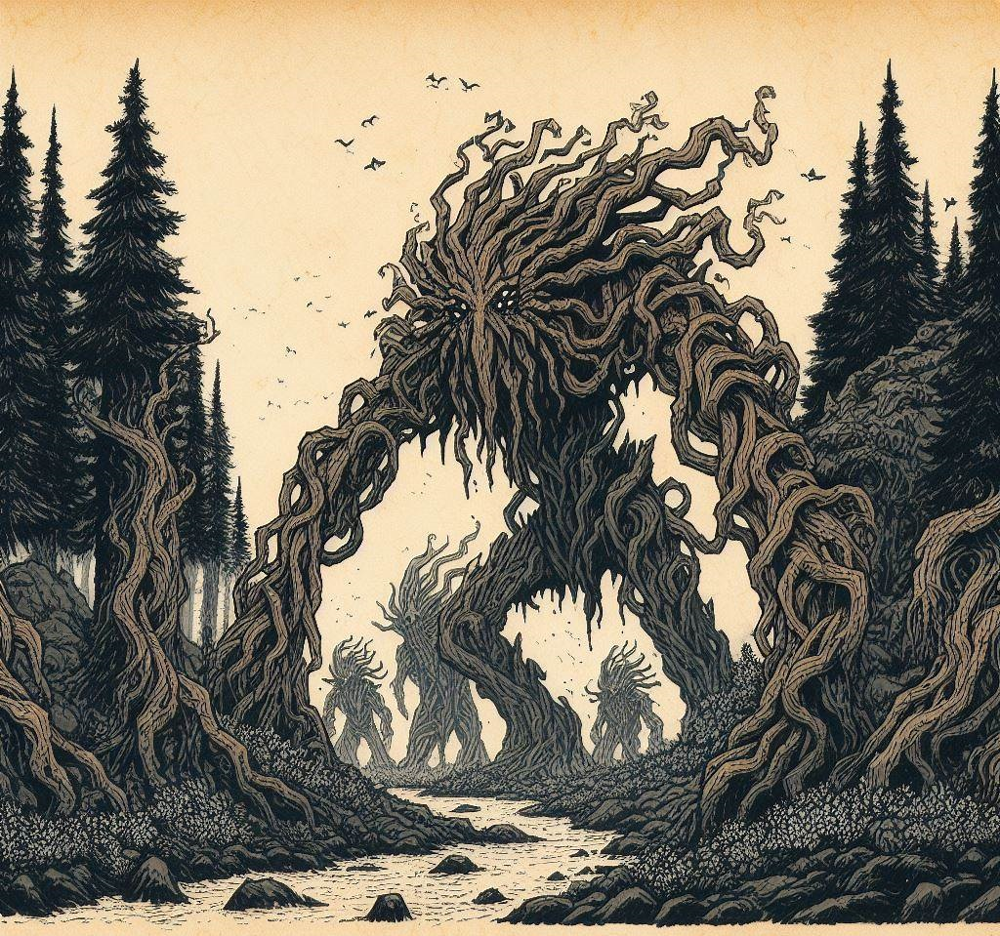

A chronicle unfolds as the once-slumbering Treants joined forces with woodland brethren in the High Forest. Elves, gnomes, firbolgs, centaurs, Ghostandians, and a Dragon unite to protect their Ancestral Woodlands.
This unprecedented coalition has sent shockwaves through the lumber and shipping industry of neighbouring settlements. Logging activities have dwindled across The High Forest & Southwood, as the guardians challenge practices that jeopardize their birthplace.
While our borders are mostly undisturbed by loggers, the Council is keeping a close eye on the situation in case the loggers would look to our forest as a source of lumber.